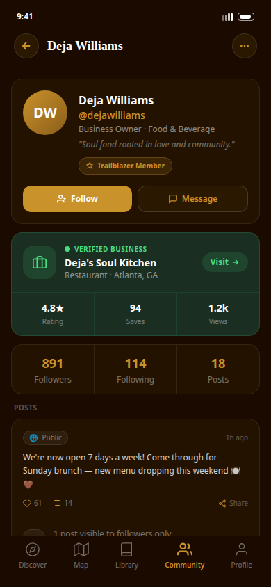
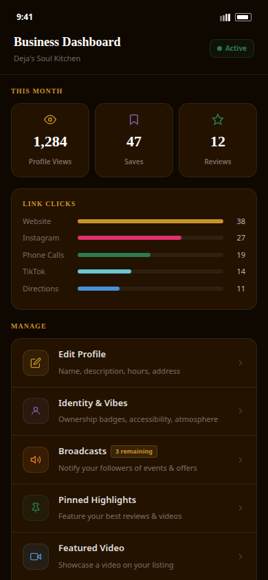

A trip. A workday. A dinner decision. A business trying to grow. Kinfolk connects the context around all of it—so a member can move with more of what matters in view.
K
Kinfolk, during a real day“I’m excited for my trip to Atlanta. What should I know before I go?”
Scroll at your own pace. The app frame changes as each moment becomes relevant—no autoplaying carousel, no detached feature list.
The difference is continuity
Not “where should I go?” “What does this day need?”
Kinfolk should feel useful before someone reaches a destination. It can remember the context a member chooses, help turn a busy day into a workable plan, connect them to the right business, and make shared care easy to find when the place is unfamiliar.
9:41● ● ●
KinfolkPrivate, practical, yours
Before the trip
Kinfolk here— let’s map it out.
✦ Your taste profile is active
YouI’m excited for my trip to Atlanta next week. What should I know before I go? I also need a hair appointment before I leave.
KinfolkI can help you think through the city around your actual days: get ready before you go, shape the travel rhythm, and find the things that change after you land.
Hair before departureMeeting rhythmPlaces to support
9:44● ● ●
KinfolkAtlanta · getting ready
Before you leave
Make room to feel ready for the trip.
YouI need braids before I leave for Atlanta. I want something that fits my schedule.
KinfolkI found two verified minority-owned braid studios to review before your trip. Tap a card to pull up the business profile—nothing is booked from this demonstration.
Demonstration only · business names, verification, service details, schedule, and booking are not live.
9:41● ● ●
KinfolkAtlanta · trip context
The day takes shape
Plan around the life inside the trip.
Kinfolk starts with what the member shared—not only the city name.
Atlanta · business tripNext week
01
Before you land
Save the questions that will make arrival feel easier.
02
Between meetings
Find places that fit the time, the neighborhood, and your values.
03
After a long day
Keep dinner, rest, and shared-care context close by.
KinfolkLet’s keep the plan flexible. Your current request always comes first.
6:18● ● ●
KinfolkAtlanta · arrival-day change
After you land
A small change can still change the day.
YouI broke my nail when I got to Atlanta. I need to get it fixed.
KinfolkI found a verified minority-owned nail studio near your hotel. Tap the card to see the business profile, then choose how you want to keep tonight moving.
Demonstration only · profile, verification, location relation, service details, availability, price, and booking are not live.
5:47● ● ●
KinfolkStill with the day
Between meetings
Make the long night feel possible.
YouIt will be a long night. Help me create the follow-up email, then find a restaurant for pickup when I’m done.
Follow-up emailIdea in review
Keep it direct: thank them, name the decision, attach the proposal, and give a clear next step.
Kinfolk tasks/reminders are source-backed. The email outline is a founder-review direction for making the task feel complete.

9:41● ● ●
Safety Hub
Community Intelligence
Community-sourced context for informed choices.
You control report privacy. Choose what you share, and keep your identity out of public views when needed.
☎
Emergency SOSCall 911 in a life-threatening emergency.
Quick report
Report a safety concernNeighborhood or community context.Share an experienceGood or bad—your voice matters.
Community Intelligence · location-led
Check an area before you move through it.Choose a location to see approved community context. Absence of alerts is never a guarantee.
01 · Before you go
Excited for Atlanta. Not starting from zero.
Kinfolk begins with the context a member chose to share—how they like to move through a city, what they value, and what this trip is actually for.
Continuity controlsTaste profileConversation first
02 · Get ready before you go
Hair before departure. One less thing to hold.
A trip starts before the flight. Kinfolk makes a pre-departure braid appointment part of the same conversation, then lets the member pull up a complete demonstration business profile without leaving the app.
The phone uses demonstration business cards. Live service, timing, cost, availability, verification, and booking require connected business data.
03 · Plan the rhythm
“What should I know before I go?”
Instead of dumping a list, Kinfolk helps someone shape a day around arrival, work, dinner, rest, and the people or places that will make the city feel usable.
The trip is useful because it is not fixed. The next question can change the plan without making the member begin again.
04 · Adapt after arrival
An emergency nail appointment. Still one conversation.
Once the member lands, an appointment change becomes a practical new request. Kinfolk identifies a verified minority-owned nail studio near the member’s hotel, then helps compare the next choice without promising availability it cannot verify.
The in-phone cards are demonstration-only. No service, price, reservation, travel time, verification, or payment is shown as live or completed.
05 · Make a hard day easier
Email. Dinner. One conversation.
This is the everyday proof point: “Help me make the email,” becomes a next step; “find pickup dinner” becomes discovery shaped by where the day ends, what the member needs, and the places they want to support.
The email-support panel is a product direction. Kinfolk’s saveable task/reminder action and contextual discovery surfaces already exist in the product source.
06 · The right business
Not a pin. A full picture.
When a recommendation matters, the member should open more than an address. They see the business owner, the verified business card, community voice, social presence, saves, and an immediate way to visit or follow.
This is an existing Replit visitor-profile screen—not a redrawn placeholder.
07 · Move with shared care
Safety is part of the whole day.
The Safety Hub belongs inside the journey—not as a fear-driven add-on. It gives someone a clear place for community intelligence, privacy-aware reports, and source-led local context when they need it.
Community IntelligencePrivate reportingLocation-led alerts
The owner side of the same relationship
The business gets more than visibility. It gets a way to act.
Member discovery, owner planning, post nudges, community feedback, accountable response, and profile presence are not different products. They are the same community relationship viewed from two sides.

9:41● ● ●
KinfolkAIBusiness improvement plan
Build a plan around the real need
“Help us make this work.”
Business ownerWe want to make our weekly dinner series stronger. Help me build a plan for it.
Kinfolk planning surfaceTranslate the goal into a sequence: clarify the challenge, name preferences, identify support, and leave with next steps.
11:18● ● ●
Business nudgesCommunity momentum
A timely invitation
Your supporters are online.
KinfolkThis is a good moment to share the dinner-series video. Want to upload it and start with one of these captions?
Behind the scenes · dinner seriesVideo upload is shown for demonstration only. Nothing will upload or publish.
11:20● ● ●
Community loopBusiness + community
A signal worth acting on
People are looking for happy hour.
KinfolkCommunity members have been searching for happy hour near you. Would you like to create a menu for them?
Demonstration only · this community signal, menu, and any resulting promotion are not live.
9:41● ● ●
Business responseOwner view · moderated
Respond with accountability
Community feedback deserves a real answer.
A member shared a concern. Prepare a response before it appears alongside the report.
Statement
We hear the concern and appreciate the opportunity to address it.
Corrective action
What changed, who owns it, and when will it be complete?
Trust plan
How will the business keep the community informed?
01 · Know what is happening
The business is already in motion.
Start with the actual owner dashboard: views, saves, reviews, link clicks, profile management, identity, highlights, video, and Broadcasts live in one place.
This is an existing Replit dashboard screen. It gives the owner a clear picture of what the community is already doing with their presence.
02 · Make a practical plan
“Help me make a business plan.”
The owner should be able to start with a plain-language need, then move through the existing plan structure: the issue, the people or services needed, the budget/timing, and the next action.
Improvement plan flowProvider matchingAction roadmap
03 · Invite the community in
Your supporters are online.
The owner gets a timely nudge to share a dinner-series video, sees caption ideas, and can hold the post inside the same business flow before any upload or publication occurs.
Video, captions, timing, and publishing are all demonstration-only states. No media is stored, sent, or posted.
04 · Close the community loop
“People are searching for happy hour.”
Discovery can flow back to the owner as a useful question: would a happy-hour menu help people find what they are already looking for?
The search signal, menu draft, and business card are demonstration-only. They do not represent live analytics or a published menu.
05 · Answer the community
Not a reaction. A responsible response.
A response to a concern becomes a clear statement, a corrective action, and a trust plan—then enters moderation. This shows the owner doing the work, not simply managing a reputation metric.
StatementCorrective actionTrust plan
06 · Close the loop
What the owner builds is what a member sees.
Profile, identity, a verified business card, community posts, follower connection, and an immediate next action return the owner’s work to the member journey—the relationship is visible on both sides.
This final state uses the existing Replit visitor profile in full. No blurred placeholder replaces the product screen.
The full story, in one connected system
Make the day work. Make the connection count.
Kinfolk can meet a member before the trip, carry context through a long day, bring the right business into view, and make shared care easier to reach. Owners can turn that same connection into a profile, a plan, a timely post nudge, a community-led menu idea, and an accountable response.
Founder-review prototype only. Existing Replit screens are included as visual source references; no preview action saves data, sends a message, posts a promotion, creates a plan, or publishes a response.